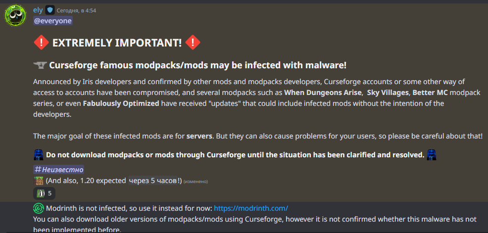
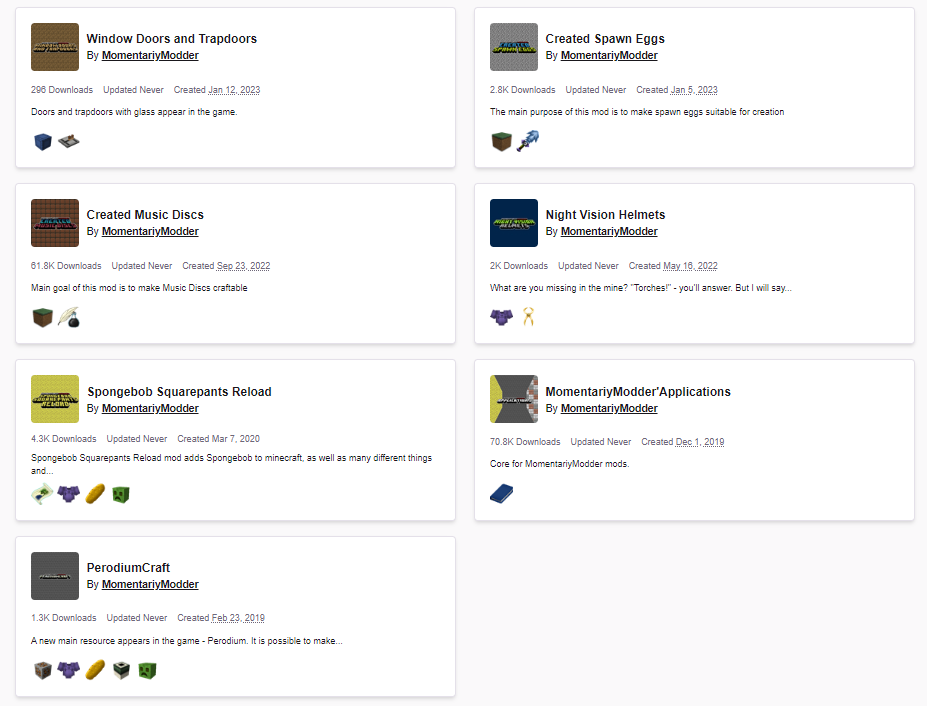
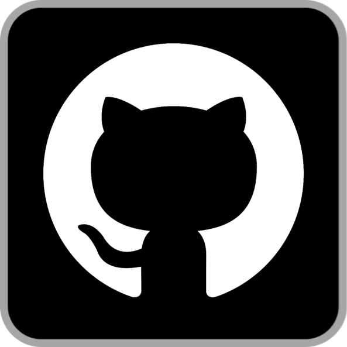
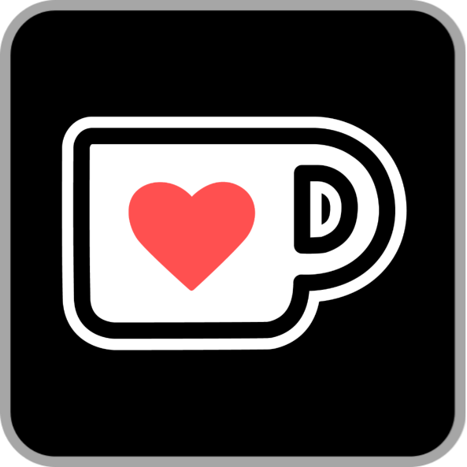

<!--
MomentariyModder Website 8.0.0 by MomentariyModder
The source code is available on GitHub!
-->

<!DOCTYPE html>
<html lang="en">
<head>
  <link rel="icon" href="../img/themes/active/favicon.png">
  <title>Old News | Blog | MomentariyModder</title>
  <meta name="viewport" content="width=device-width, initial-scale=1, maximum-scale=1" />
  <meta name="title" content="Old News | Blog | MomentariyModder">
  <meta name="description" content="Hello, my name is MomentariyModder, or, as my friends and acquaintances often call me, Modder. I am passionate about creating mods and servers, and I used to work with modpacks and resource packs.">
  <meta name="keywords" content="Minecraft, Mods, MomentariyModder">
  <meta name="theme-color" content="#4bb4f1">


  <script src="https://code.jquery.com/jquery-3.3.1.min.js"></script>
  <script src="https://cdn.jsdelivr.net/npm/handlebars@latest/dist/handlebars.js"></script>
  <script src="https://mcapi.us/scripts/minecraft.min.js"></script>
  <script src="../js/main.js"></script>
  <script src="../config.js"></script>
  <script src="../js/lightbox.min.js"></script>
  
  <script>tosAgreed = true</script>
  
  <link rel="stylesheet" href="https://cdnjs.cloudflare.com/ajax/libs/font-awesome/7.3.1/css/all.min.css"/>
  <link rel="stylesheet" href="../css/style.css">
  <link rel="stylesheet" href="../config.css">
  <link href="../css/lightbox.css" rel="stylesheet" media="all">

</head>


<body>

  <div id="target"></div>

  <script id="template" type="text/x-handlebars-template">

  <header>
    <div class="hero" id="hero">
      <a href="#!"><h1 style="padding-top: 3%;"></h1></a>
    <p> </p>
    <div class="news-card" align="center">
	  <a href="https://momentariymodder.com/" class="btn"><i class="fa-solid fa-house"></i> Home</a>
      <a href="../" class="btn"><i class="fa-solid fa-newspaper"></i> Blog</a>
    </div>
	<p> </p>
	</div>
  </header>
  
  <section class="dark">
    <h1 id="news2">Old News</h1>
	<p align="center">Time zone is UTC+3</p>
    <div id="news">
	  <div class="news-card">
        <strong>Introducing Storage Crate (05.10.2023 04:05)</strong>
		<p> </p>
		Don't have enough storage space in your chests? Then you need Storage Crate! There are three types of storage boxes: Small, Medium and Large. Each type has its own number of slots: Small has 119, Medium has 238 and Large has 357 slots.
      </div>
	  <p> </p>
	  <div class="news-card">
        <strong>(21.08.2023 01:26)</strong>
		<p> </p>
		Hi, I want to announce that I will be hosting my X/Twitter page again! Also I have updated the channel ⁠┃information, now it contains more information than links. And also I have updated the pages of all projects (that are supported) on CurseForge and Modrinth. Oh, and I also updated the website.
      </div>
	  <p> </p>
	  <div class="news-card">
        <strong>THE 1.20.x UPDATE (17.08.2023 00:16)</strong>
		<p> </p>
		I am glad to inform you that all mods have been updated to version 1.20.1!
		<br>
        I have also updated the Discord server and website!
		<br>
        The channel #┃projects has been updated, and channels(⁠┃modrinth-updates and ⁠┃curseforge-updates) have also been added where messages about new updates will be sent.
        <br>
		NeoForge support has also been added! 
      </div>
	  <p> </p>
	  <div class="news-card">
        <strong>(12.08.2023 05:08)</strong>
		<p> </p>
		The license was updated today!
      </div>
	  <p> </p>
	  <div class="news-card">
        <strong>(07.06.2023 17:22)</strong>
		<p> </p>
		Due to this news, I will temporarily remove the ability to download my mods from CurseForge.
        <br>
	    
		<p> </p>
		<i>UPDATE</i><br>
		A depressing picture. If everything goes well, I will return all versions of mods to CurseForge in 3 days!<br>
		
      </div>
	  <p> </p>
	  <div class="news-card">
        <strong>Website 3.0 (10.05.2023 17:22)</strong>
		<p> </p>
		Finally, a major website update has been released, and a wiki has also appeared!
      </div>
	  <p> </p>
	  <div class="news-card">
        <strong>About the new CurseForge website (18.04.2023 14:53)</strong>
		<p> </p>
		I don't like the transition to the new site CurseForge. Not because I don't like the site itself, but because it's NOT READY. At the moment, I do not know if I will continue to release my mods and update them on this platform.
      </div>
	  <p> </p>
	  <div class="news-card">
        <strong>About the situation on CurseForge (17.04.2023 03:08)</strong>
		<p> </p>
		I did not expect that CurseForge would remove Iris due to the transition to Modrinth. At the moment, I will not stop releasing updates to my mods on CurseForge, but if the situation worsens, I will be forced to leave this platform.
      </div>
	  <p> </p>
	  <div class="news-card">
        <strong>Patreon and Boosty (02.04.2023 03:06)</strong>
		<p> </p>
		I want to announce that I have a Patreon and a Boosty! There will be going out:<br>
		- Preview^ versions of my mods<br>
		- Early access to new release versions<br>
		- And a special role and channel on this server
		<p> </p>
		^The preview is a version that players can use to test the beta features of my mods.
      </div>
	  <p> </p>
	  <div class="news-card">
        <strong>Changing access to the site in a number of countries (09.02.2023 2:47)</strong>
		<p> </p>
		Site is no longer available for:
		<br>
		🇦🇫 Afghanistan, 🇨🇳 China, 🇮🇷 Iran, 🇮🇶 Iraq, 🇰🇵 DPRK, 🇵🇰 Pakistan, 🇵🇸 Palestine, 🇸🇾 Syria, 🇹🇼 Taiwan, 🇹🇲 Turkmenistan
      </div>
	  <p> </p>
	  <div class="news-card">
        <strong>Freezing the development of two mods! (08.01.2023 11:53)</strong>
		<p> </p>
		Unfortunately, I have to freeze the development of mods PerodiumCraft and SpongeBob Squarepants Reload for an indefinite period.
      </div>
	  <p> </p>
      <div class="news-card">
        <strong>Update website! (08.01.2022 08:00)</strong>
		<p> </p>
		A major update for the site has been released. The display of projects and their pages has been changed, Video and News sections have also been added, and the font has been changed.
      </div>
    </div>	  
  </section>
  <section class="dark">
	<div class="news-card" align="center">
	<a href="../" class="btn2"><i class="fa-solid fa-newspaper"></i> Back to Blog</a>
	</div>
  </section>
  
  <section class="light">
    <div id="projects-l1" class="grid2">
	<div class="staff-card3-d">
	<h2><i class="fa-solid fa-share"></i> Links</h2>
	  <a href="https://discord.com/invite/9XqgjRd" class="button3"><b>Discord</b></a><br>
	  <a href="https://t.me/momentariymodder" class="button3"><b>Telegram</b></a><br>
	  <a href="https://t.me/momentariymoddershitpost" class="button3"><b>Telegram (Shitpost)</b></a><br>
	  <a href="https://twitter.com/momentariymoder" class="button3"><b>X/Twitter</b></a><br>
	  <a href="https://bsky.app/profile/momentariymodder.bsky.social" class="button3"><b>Bluesky</b></a><br>
	  <a href="https://modrinth.com/user/momentariymodder" class="button3"><b>Modrinth</b></a><br>
	  <a href="https://www.curseforge.com/members/momentariymodder" class="button3"><b>CurseForge</b></a><br>
	  <a href="https://github.com/MomentariyModder" class="button3"><b>GitHub</b></a><br>
    </div>
	<div class="staff-card3-d">
	<h2><i class="fa-solid fa-comments-dollar"></i> Send a donate!</h2>
	  <a href="https://ko-fi.com/momentariymodder" class="button3"><b>Ko-fi</b></a><br>
	  <a href="https://www.buymeacoffee.com/momentariymodder" class="button3"><b>Buy me a Coffee!</b></a><br>
	  <a href="https://www.donationalerts.com/r/momentariymodder" class="button3"><b>DonationAlerts</b></a><br>
	  <a href="https://boosty.to/momentariymodder/donate" class="button3"><b>Boosty</b></a><br>
    </div>
	</div>
  </section>
  
  
  <footer>
    <a>&copy; {{server_port}} {{server_name}}. All Rights Reserved.</br>Not an official Minecraft product. We are in no way affiliated with or endorsed by Mojang Synergies AB, Microsoft Corporation or other rightsholders.<br>{{server_ip}}</a>
	<a></a>
	
  </footer>
  </script>
  <script src="../js/license.js"></script>
  
</body>
</html>